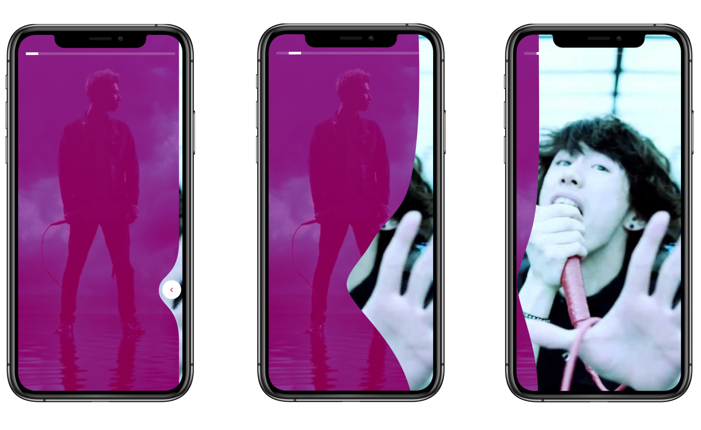
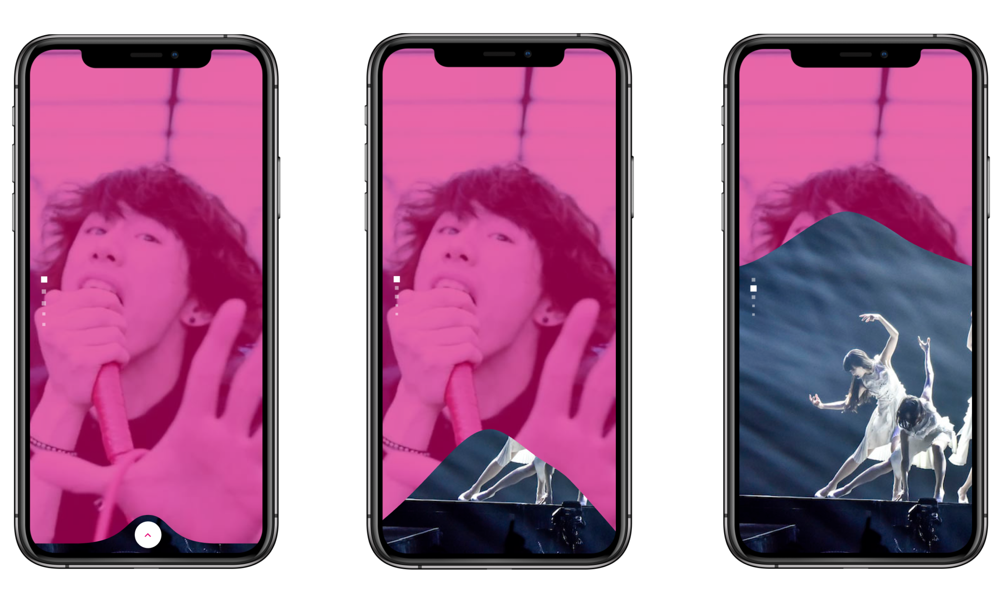

<div class="row">
  <div class="col-md-8 offset-md-2">
    <p>Rhinobird es una empresa de tecnología de videos basada en Boston EEUU y Santiago de Chile. Su fin es crear interfaces de videos inteligentes que permitan a los usuarios interactuar con ellas y descubrir más contenido.</p>
    <p>Mi primer desafío como diseñadora fue crear una interfaz de reproductor de video móvil donde los usuarios pudieran
    entender intuitivamente que si hacian swipe, horizontal y verticalmente, podían descubrir más contenido relacionado.</p>
    <p></p>
    <p>En la pantalla inicial, antes de presionar play, agregué una pequeña animación donde se ve el primer video tapando al siguiente, imitando un poco el efecto de un mazo de cartas cerrandose. De esta forma el usuario puede intuir que viene un video por detrás. Para apoyar esta idea cambié el diseño del icono play regular por uno que dibuja estos elementos por detrás.</p>
    <p></p>
    <p>Una vez que el video se empieza a reproducir, junto con la barra de progreso, título de video y controles agregué dos barras indicadoras de que son slides. La razón por la que decidí hacer una barra como línea continua y la otra como cuadrados separados es porque el contenido que se descubre horizontalmente es contenido más relacionado que el vertical. Por ejemplo horizontalmente se pueden decubrir más canciones de un grupo musical, y verticalmente se pueden descubrir otros grupos musicales.</p>
    <p>Luego de 3 segundos desaparece la información del video, junto con el filtro rosado, y solo se mantienen durante 3 segundos más las barras indicadoras de slides, para reforzar su presencia.</p>
    <p></p>
    <p></p>
    <p>Para los gestos de swipe horizontal y vertical agregué una transición líquida, de manera que sea más explícito esta sensación de estar "destapando" el siguiente video.</p>
  </div>
</div>
